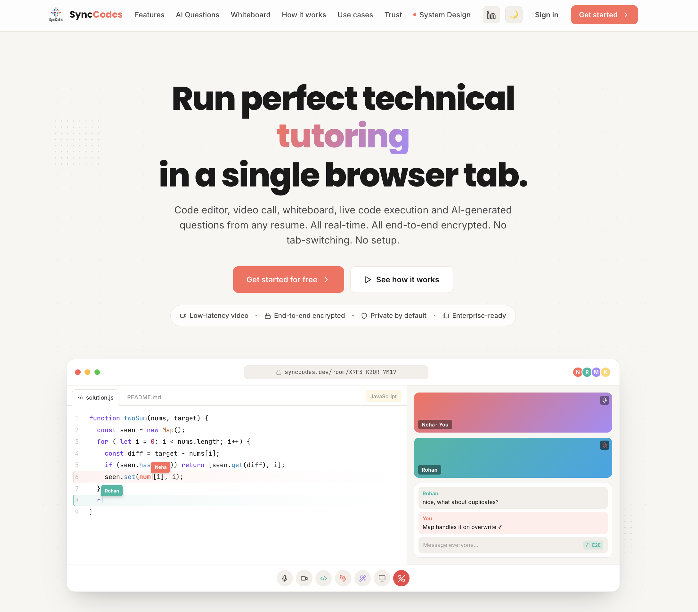

Synccode
SyncCode is a full-stack, real-time collaborative engineering platform designed to bring distributed software teams into a single intelligent workspace. Built using an event-driven and scalable architecture, it combines a conflict-free collaborative code editor (Yjs CRDT), low-latency WebRTC video conferencing, collaborative whiteboarding, end-to-end encrypted messaging, and sandboxed multi-language code execution into one seamless environment. The platform also integrates AI-powered interview assistance, where large language models analyze uploaded resumes and automatically generate role-specific technical interview questions, streamlining the hiring process. Leveraging technologies such as React, Node.js, Socket.IO, Redis, PostgreSQL, Prisma, Supabase, and self-hosted Piston containers, SyncCode demonstrates modern distributed systems design, real-time synchronization, secure communication, and intelligent workflow automation, providing an all-in-one collaborative environment for coding interviews, pair programming, technical mentoring, and remote software development.

Why It Matters
Modern software development is no longer an individual activity—it is a collaborative process involving pair programming, technical interviews, mentoring, design discussions, and distributed engineering teams. Yet developers still rely on multiple disconnected tools for code editing, video conferencing, whiteboarding, communication, and code execution, resulting in constant context switching and fragmented workflows. SyncCode addresses this challenge by bringing every essential collaboration capability into a single real-time workspace. Developers can write code together, communicate instantly, execute programs securely, brainstorm visually, and even leverage AI-generated interview questions without ever leaving the session. By reducing friction between collaboration and development, SyncCode enables teams to focus on solving problems rather than managing tools, ultimately improving productivity, communication, and the overall engineering experience.
Engineering Focus
SyncCode is engineered around the principles of low-latency collaboration, distributed systems, security, and scalable architecture. Every major component has been designed to provide a seamless multi-user experience while maintaining consistency, reliability, and performance across geographically distributed participants.
- Real-Time Collaborative Editing — Built using Yjs CRDTs, allowing multiple engineers to edit the same document simultaneously without merge conflicts while guaranteeing eventual consistency, even during network interruptions.
- Scalable Event-Driven Communication — Powered by Socket.IO with Redis Pub/Sub, enabling real-time synchronization of code changes, whiteboard events, chat messages, and session state across multiple backend instances.
- Peer-to-Peer Communication — Uses WebRTC for ultra-low-latency video conferencing and screen sharing, ensuring media streams flow directly between participants instead of burdening the application server.
- Secure Session Architecture — Implements JWT-based authentication, role-based room admission, waiting lobbies, encrypted private messaging, payload validation, and rate limiting to protect collaborative sessions from unauthorized access and abuse.
- Sandboxed Code Execution — Integrates a self-hosted Piston execution engine that safely runs code inside isolated containers with strict CPU, memory, and filesystem constraints, allowing collaborative coding without compromising infrastructure security.
- AI-Powered Interview Assistance — Employs large language models to analyze uploaded resumes and automatically generate contextual technical interview questions, helping interviewers conduct more relevant and personalized assessments.
- Cloud-Native & Production Ready — Designed using React, Node.js, PostgreSQL, Prisma, Redis, Docker, Supabase Authentication, and Nginx, following modular service boundaries that make the platform scalable, maintainable, and ready for production deployments.
Key Engineering Highlights
- Unified real-time engineering workspace eliminating context switching.
- Conflict-free collaborative editing with CRDT-based synchronization.
- Distributed event-driven architecture supporting horizontal scalability.
- Secure multi-user collaboration with authentication, authorization, and encrypted communication.
- Containerized multi-language code execution with resource isolation.
- AI-assisted technical interview preparation and candidate evaluation.
- Optimized for pair programming, remote software development, technical interviews, mentoring, and collaborative learning.